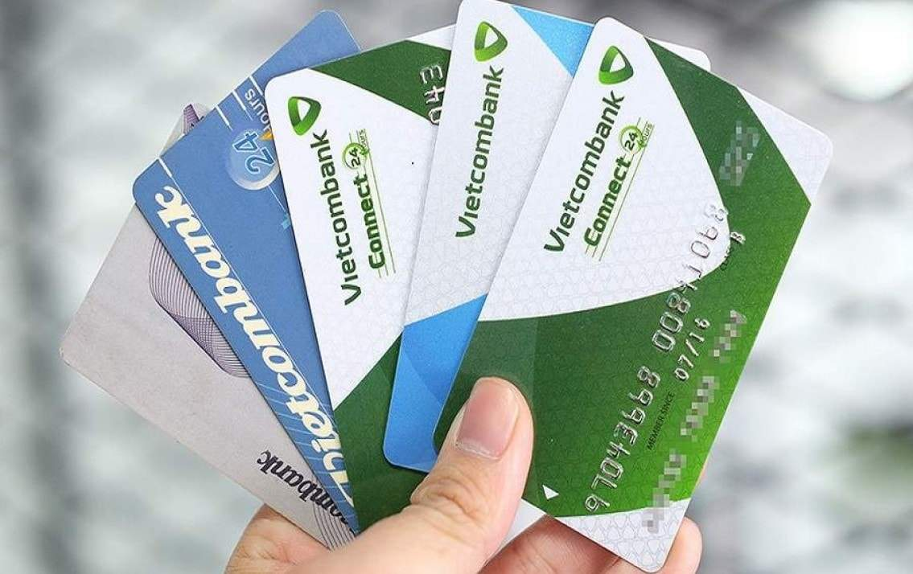

Cách rút tiền ATM Vietcombank chi tiết cho người mới sử dụng
21/05/2024
Không phải ai cũng biết cách rút tiền từ thẻ ATM Vietcombank, đặc biệt là những người mới sử dụng lần đầu. Bài viết dưới đây sẽ hướng dẫn cách rút tiền ATM Vietcombank, bạn hãy theo dõi nhé!
Rút tiền mặt là hoạt động diễn ra thường xuyên nhằm đáp ứng nhu cầu chi tiêu và thanh toán của người dùng khi sử dụng thẻ ATM Vietcombank. Tuy nhiên, không phải ai cũng biết cách rút tiền từ thẻ ATM Vietcombank. Đặc biệt là những người mới sử dụng lần đầu tiên.
Bài viết dưới đây sẽ hướng dẫn cách rút tiền ATM Vietcombank chi tiết. Bạn hãy cùng Blog Ngân Hàng theo dõi nhé!
Giới thiệu về thẻ ATM Vietcombank
Thẻ ATM Vietcombank là một loại thẻ được phát hành bởi Ngân hàng Thương mại Cổ phần Việt Nam Vietcombank. Đây là loại thẻ theo chuẩn ISO 7810, có đầy đủ các tính năng mang đến sự thuận tiện cho người dùng.
Khi sử dụng thẻ ATM của ngân hàng Vietcombank, khách hàng có thể sử dụng các tiện ích như: Thanh toán hóa đơn, vấn tin tài khoản, chuyển tiền, rút tiền, mua thẻ điện thoại… từ máy rút tiền tự động do ngân hàng VietcomBank cung cấp hoặc qua Internet Banking.
Phân loại các loại thẻ ATM Vietcombank
Thẻ ATM trả trước: Khách hàng cần nạp tiền vào. Sau đó chi tiêu hoặc có thể tặng cho bạn bè, người thân.
Thẻ ATM ghi nợ: Đây là loại thẻ được nhiều người sử dụng. Bạn có thể thực hiện giao dịch rút tiền, chuyển tiền, thanh toán hóa đơn…
Thẻ tín dụng: Khách hàng có thể chi tiêu trước, thanh toán sau, ngân hàng sẽ cấp cho một hạn mức. Ngân hàng miễn lãi trong vòng 45 ngày. Sau đó khách hàng có nghĩa vụ phải hoàn trả dư nợ đúng thời hạn, nếu không sẽ bị tính lãi cao.

Các loại thẻ ATM Vietcombank hiện nay
Có các loại thẻ ngân hàng Vietcombank nào trên thị trường?
Lợi ích khi sử dụng thẻ ATM Vietcombank
Trong cuộc sống hiện đại như ngày nay, việc sử dụng các loại thẻ ATM là điều vô cùng cần thiết. Dưới đây là một số lợi ích mà thẻ ATM Vietcombank mang lại:
Khách hàng dễ dàng quản lý được số tiền được chuyển vào tài khoản hoặc rút ra.
Giảm thiểu được một số rủi ro có thể xảy ra so với việc cầm một số tiền mặt lớn bên người.
Có thể cài đặt các ứng dụng ngân hàng điện tử Vietcombank với nhiều tiện ích vượt trội..
Rút tiền nhanh chóng, dễ dàng ở bất cứ cây ATM Vietcombank hoặc có liên kết với Vietcombank.